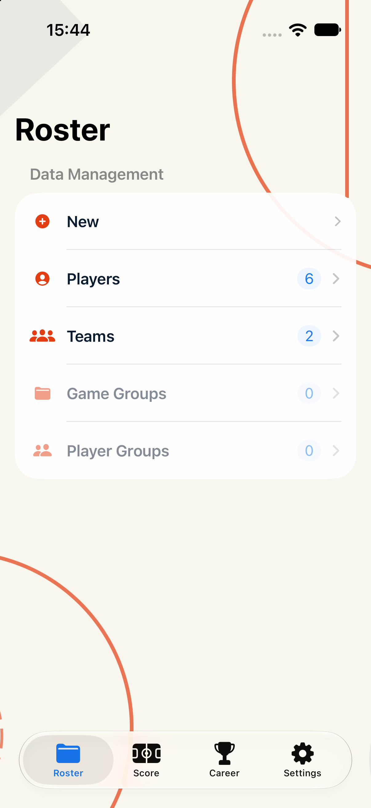
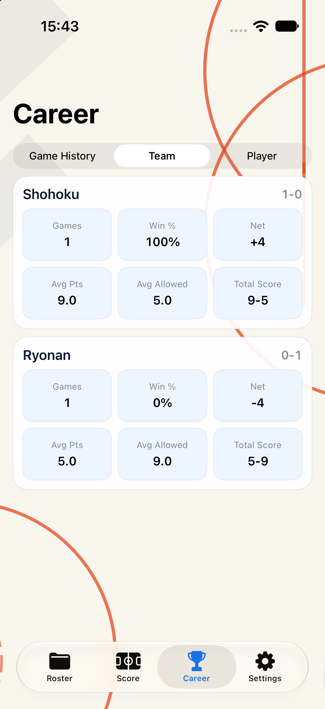
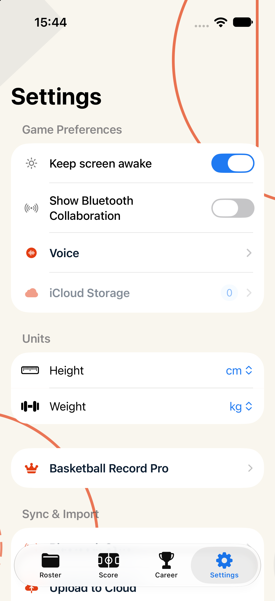
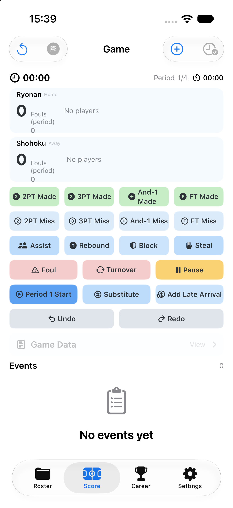

Adaptive A 产品迁移验收
状态：已完成代码迁移与 iPhone 17 截图验证，等待用户 review
范围：已确认的 Adaptive A 视觉层已迁入现有产品，并应用到管理、生涯、设置及已有的非记分页视觉组件。
- 保留原有页面结构、导航关系、交互动作、数据展示和存储模型。
- 没有修改
BasketballRecord/Views/Game/，记分页截图仅作为保护性证据。 - 背景由 SwiftUI 几何 Shape 绘制，不包含文字，不依赖语言或固定设备图片尺寸。
- 没有新增本地化文案、业务字段或持久化字段。
- Debug 构建成功；iPhone 17 / iOS 27.0 截图分辨率均为 1206×2622。
本轮没有执行 Git commit，也没有执行 Fastlane 或 App Store Connect 上传。




修改重点
BasketballRecord/Views/Skin/EditorialDesign.swift：统一 Adaptive A 色彩、卡片、列表、Tab Bar 和自适应球场线背景。BasketballRecord/Views/ContentView.swift：经典主题使用统一的 Adaptive A Tab Bar 外观。BasketballRecord/Views/Career/CareerView.swift：非像素职业内容使用同一套自适应背景。